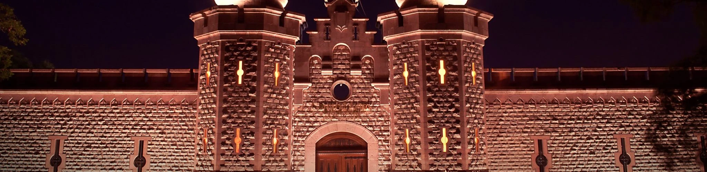

Descubre todas las actividades que el Centro de las Artes de San Luis Potosí tiene para ti: exposiciones, talleres, festivales y más. Consulta nuestra agenda cultural actualizada y participa en eventos que enriquecen el panorama artístico del estado.
Agenda - Actividades
Agenda de Actividades
Inaugurado el 27 de agosto de 2008, el Centro de las Artes de San Luis
Potosí forma parte de la Red Nacional de Centros de las Artes, conformada
por siete Centros de Formación y Producción Artística, y trece
Centros de las Artes. El inmueble en donde se sitúa el CEART fue utilizado
desde su origen (1904), hasta el mes de marzo de 1999, como centro
penitenciario; la construcción se apega al modelo panóptico de arquitectura
carcelaria (con vigilancia total desde un solo punto), ideada por
el filósofo Jeremy Bentham.
Exposiciones
Inaugurado el 27 de agosto de 2008, el Centro de las Artes de San Luis Potosí forma parte de la Red Nacional de Centros
de las Artes, conformada por siete Centros de Formación y Producción Artística, y trece Centros de las Artes. El
inmueble en donde se sitúa el CEART fue utilizado desde su origen (1904), hasta el mes de marzo de 1999, como
centro penitenciario; la construcción se apega al modelo panóptico de arquitectura carcelaria (con vigilancia total
desde un solo punto), ideada por el filósofo Jeremy Bentham.

Horarios
Lunes a Viernes 10:00 a.m. - 5:00 p.m.
Indicaciones
Ingreso por Av. Universidad. Estacionamiento gratuito disponible.
Información
Grupos de hasta 25 personas. Reservación previa requerida. visitas@centrodelasartesslp.mx
Festivales
Inaugurado el 27 de agosto de 2008, el Centro de las Artes de San Luis Potosí forma parte de la Red Nacional de Centros
de las Artes, conformada por siete Centros de Formación y Producción Artística, y trece Centros de las Artes. El inmueble
en donde se sitúa el CEART fue utilizado desde su origen (1904), hasta el mes de marzo de 1999, como centro penitencia


.webp)
.webp)